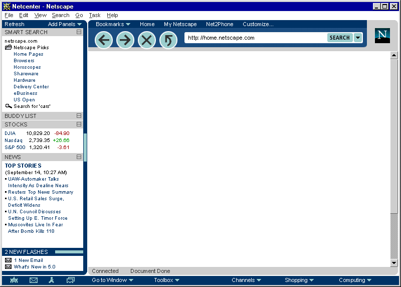
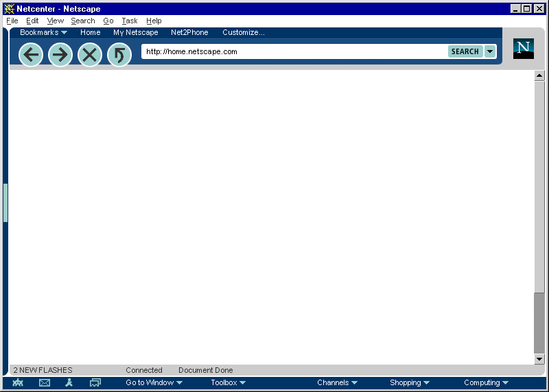
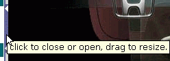
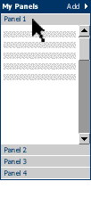
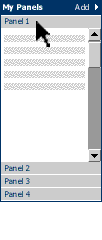
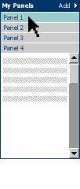
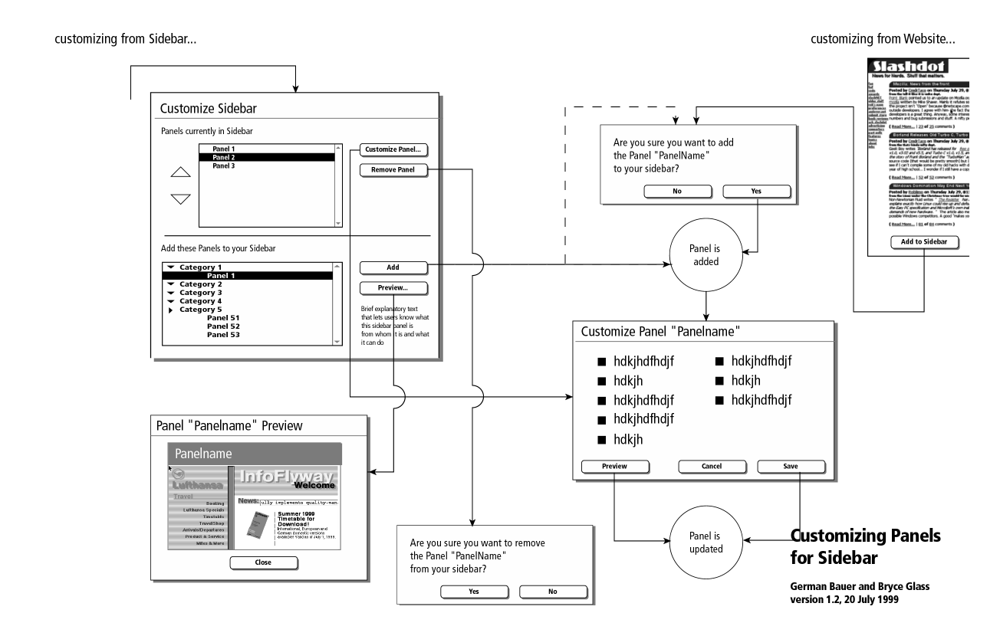
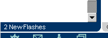

| 5.0 |
UI Specification
|
| Sidebar UI Specification |
Last Modification:
|
| Author: German Bauer Creation Date: January 10,1998
|
Status: Implementable specification, coordinated with Netcenter and Client PM and Engineering | ||||||||||||||||||
|
Quick Index:
|
Feature Team
|
Recent Changes
12/21/99 Removed FONT tags and increasez some font sizes for easier legibility for Linux user. Screenshots will be updated shortly
10/24/99 Simplified customizable panels by showing one panel at a time !All still screen shots are from before that change and still need to be updated!
9/24/99 Completely updated based on Netscape look and feel and based on new sidebar redesign (3 main sections instead of all panels like in previous design) to enable apps to own their application specific area independent of panel configuration
7/25/99 Revised and updated designs for sidebar customization based on input from Netcenter design (Bryce Glass)
5/25/99 Added design details for sidebar, panels and customization page, as well as customization rules for content providers and applications
1/20/99 Complete redesign based on adding messenger to new gecko based 5.0 platform
Summary
What is it?
It is a side-by-side viewing area inside a 5.0 application window that assists end users in finding 'the next bit of information' more quickly and easily.
Goals
Deliver services and tools that empower daytime users to save time and fully
exploit the Internet. The client and Sidebar in particular support this mission
by making these services and tools more easily discoverable and accessible.
"Keeps you connected to what's most important to you" compelling content (My Netscape, Web Calendar, email folders) customizable (add or delete panels, customize individual panels, 3rd parties) dynamic (What's Related/Smart Browsing) Customization and configuration of your internet experience
Target Users
All target users of 5.0 and specifically "information consumers"User Tasks
Fundamental Tasks Intermediate Tasks Advanced Tasks
- Access Application specific functionality/data (i.e. Mail folders, search results etc.)
- Access personalized subset of news, headlines etc. From 'My Netscape'
- Access set of "pager" like notifications
- Customize contents of personalized panels area
- Open/Close Sidebar
- Resize width of Sidebar
- Change sidebar configuration, e.g.:
- Hide sidebar completely
Design Overview
Topology across applications
| Application specific |
A sidebar is split up into into three pane-like regions where :
The panes are separated by splitters much like you see in the three pane Mail today. The middle pane will have one global scroll bar if the customizable panels exceed the visible height of the middle pane. The bottom and top pane may have their own scroll bars if needed. Both the My Panels pane in the middle as well as the alerts pane on the bottom collapse downwards, and in the collapsed state the alerts pane header/divider is flush with the status bar in the content area. The middle my panels pane will be collapsed by default in Mail, IM and address book and open in Navigator. |
| Personalizable Panels | |
| Panel 1 | |
| Panel 2 | |
| Panel 3 | |
| Panel 4 | |
| Panel 6 | |
| Alerts | |
Default setup per application
| Browser | Chat | Adr.Book | |||||
| i | i | i | The personalizable my panels
pane will be collapsed by default in Mail, IM and address book and open
in Navigator.
|
||||
| title | |||||||
| title | |||||||
| title | |||||||
Default Sidebar in Navigator
Default Sidebar In Messenger

Default Sidebar In Chat

Sidebar closed (notification area visible)

Design Details
Design Philosophy
Out of box experience
Everything showing on the default sidebar should be
- useful
- immediately accessible without scrolling
- consistent in terms of user experience, i.e. all panels will behave similarly
- a combination of timely context-sensitive and user-relevant information
Panels may be removed or added on a per application basis (using the 'more..' button on the sidebar header)
In addition, we recommend that content should be kept to be brief minimum (headline style) in order to be quickly scann-able by the user.
In addition, panel content providers and applications on the C5 platform will be allowed to design the interior of their panels but not the frame or user interaction of the panel frame or the sidebar as a whole.
Behavior Rules for customizable panels
- Panels may not have their own menus or insert menus in the menu bar
- Panels may not modify the appearance or functionality of their own panel frames or the appearance or functionality of other panels or their frames
- Panel content can either target itself or the content window
- Panel content should make use of the sidebar contents style sheets wherever possible (provided with the shipping product) so that users can adjust viewing sizes etc. as a whole.(this may not feasible for 5.0, since we are now saying that we use just regular HTML and make this the same feed between MyNetscape and Sidebar)
- Scrollbars are not to be used inside panels. Instead a global scrollbar will be provided to allow scrolling through all panels in the personalizable panels area (this is to avoid the appearance of double Scrollbars which will confuse users). Panels are to be presented either opened fully or collapsed so that they reveal the panel header area only.
Anatomy of the Sidebar area
Resizing visible sidebar width

A slim 8 pixel wide divider area will allow users to resize the content width of the sidebar. Clicking on the divider will allow users to close the sidebar when the sidebar is open or to open it to the last used width when it is closed. Each application is responsible for storing its last used sidebar width.
The divider area is still visible even when the sidebar is closed in order to ease finding how to reopen the sidebar.
A tooltip is to be used to indicate this functionality when mousing over the divider area. A visual indication (aka 'grippy') with highlight on mouseOver and mouseDown) is to be used to further indicate the divider functionality. While this visual indication will be shown at a middle vertical position of the divider only, the divider will be mouse-sensitive across it's whole area.
The sidebar can also be completely hidden by going to the View Menu under Sidebar >, where users can toggle the visibility of it.
Default sizes
Default width out-of-the-box for Navigator will be 170 px. Default width out-of-the-box for Messenger will be like Messenger 4.5 (200 px). These calculations are based on the target 800*600 screen size. The goal is to let sites on the net appear the same way as it appears in 4.x on a VGA screen, namely those sites that do not display a horizon. scroll bar in a 4.x browser, should also not display a horizontal scrollbar in a maximized browser on a 800*600 screen with the sidebar open.
In addition access to open/close functionality as well as to sidebar customization will be provided From the 'Sidebar' item inside the 'View' menu. Also under special circumstances the sidebar may be opened From JavaScript , e.g. in the browser when search results are to be displayed side by side with the browser area.
Personalizable Panels area (AKA My Panels)
One vertical scrollbar will be used to scroll when the total height of visible panel areas exceeds the visible content area of the sidebar. A horizontal scrollbar will not be used.
When the Personalization Section is Minimized, it will show "My Panels" [name TBD] instead of showing the controls "Refresh" and "Add Panels".
Header area
|
X | Panel 1 | |||||
| Panel 1 | X | Panel 2 | |||||
| Panel 2 | X | Panel 3 | |||||
| Panel 3 | Panel 4 | ||||||
| X | Panel 5 | ||||||
| Panel 6 | |||||||
| ------------------ | |||||||
| Customize... | |||||||
| Panel 5 | |||||||
Add Panels... button
The Add Panels... button gives users access to selecting which of the panels they subscribe to appear in the My Panels section on a per application basis. Thus panels 2, 4 and 6 may be shown in Navigator whereas panels 3,5 and 6 are shown in AIM. The panels to be shown can be selected From a list of all panels the user has subscribed to. This list will fly out as a submenu once the Add Panels... button is clicked on. The last item on this list will allow to customize the overall list of available panels and add new panels From the net. See the customization section below
Reload button
The reload button will cause the content of all panels to update immediately, even when an auto-update was not yet scheduled. This will work independently of the reload button on the main Navigator or Messenger toolbar. This is to let users easily recover From 'stuck' panels due to network problems without affecting their browser or Mail content area.
My Panels panel in detail
Viewing panels in the customizable panels area
Based on early usability testing, on competitive apps knowledge as well as UI design experience this change is a good thing. What's the change? We are changing the customizable panels area inside the sidebar to show one panel open at a time. The other visible panels collapse to header areas that get stacked on top or bottom of the currently open panel. Simply clicking on one of the collapsed panel header will expand that panel and collapse the previously expanded panel.

Why is this new UI a better UI?
It's actually an old UI: This was the originally planned UI in an early sidebar specification
User feedback: In early usability test customers specifically mentioned MS Outlooks UI panels as a simple desirable UI, that we should copy, rather than a more complex mechanism
It's simpler to use: Instead of worrying about double scroll bars (which seem to be unavoidable technically) or more widgets or panels resized by dragging their headers users use a simple one click gesture to view another panel
Less usability testing effort required: Because of the far simpler mechanics we can test this UI in one pass with a limited number of subjects. Familiarity of this UI model from other applications also helps.
More than panel no longer required: The original need was based on the fact that app-specific areas (such as mail folders) and alerts had to be visible along side with panels. We now have a better management of those areas using a familiar top level frame UI. Both panels and app-specific areas are now embedded in their own frames thus ensure visibility for both. Alerts are no longer in 5.0, but using this framework they can be easily added later.
Alternatives for the exact panel collpapse and expand mechanism are currently being looked at:


Hide and Show
Each Panel can be Hidden and Shown. Panels can be Hidden or Shown by clicking on the "Add Panels" menu at the top of the Personalization Section. Panels can be hidden or shown on a per-component basis. That is, Related Links might be Shown in the Browser, but Hidden in Mail The panels draw From a global list that has a global sort order across components. That is, if I choose to make Stocks the first item in Mail, it will be the first item in the Browser if it is Shown in both components.
Customizing content of the Sidebar
Panels may be removed or added on a global basis . Upon selecting the Customize... item From Add Panels... in the My Panels header area a separate customization window is opened.
Customization window
A two frame design where the upper frame shows the list of panels loaded in the sidebar. This list is always available, even in off-line mode. This is also application specific, that is the contents will look different based on From which application the customize sidebar window has been launched. The user may remove panels, or rearrange their order in the sidebar. A customize button will be provided to customize each individual channel.
, the lower half shows the customize URL which lets users set parameters individual to each panel. This customization area is furnished by the panel content provider.
Users will be able to add panels by using this customize dialog or add them directly by pressing a button on a website they're on.The lower pane will a listing of channels that can be added.
The content area of this is provided by Netcenter. This design needs to scale
with the expected amount of panels coming online once the product is launched.
The design shown here is not final but probably needs to be a combination of
categorized hierarchical lists and possibly a search field.
In addition a list of local client based panels will be shown. This local
list is the only list of panels shown when the user happens to be off-line[This
needs to be verified - gb]
Users will be automatically led to the customize dialog (see above) once the panel has been added so the added panel becomes useful for them immediately.
Here's the whole flowchart to visualize the flow of action (click to see full size diagram):
Users will have the same UI experience whether they add From a web site or they add From the customize dialog.
Alerts section (after 5.0)
The alerts is made available in every primary window in 5.0 It is always placed at the bottom of the sidebar and may display up to X alerts at one time. If more alerts are received they will added to the top while older alerts scroll to the bottom of the list. A scrollbar for the alerts area will show up if the number of alerts exceeds the visible area of the alerts section. We should attempt to open the alerts are only as much as is needed to display all alerts, that is if there are only two alerts available we would resize the alerts area to not show any white space for additional alerts.
In all components, when the Alerts Section itself is Minimized, it becomes flush with the status area and displays the current number of flashes within the Section like this:

This also happens when the sidebar is closed in which case the alerts section gets visually integrated with the statusbar:


{kind=link}
{kind=link}
{kind=link}
Menus and Preferences
Menu bar
Context Menus
this section will be added laterPreferences
We do not expect client side prefs for the sidebar.
Error Messages
and Dialogs
this section will be added later
Condition Message User Choices